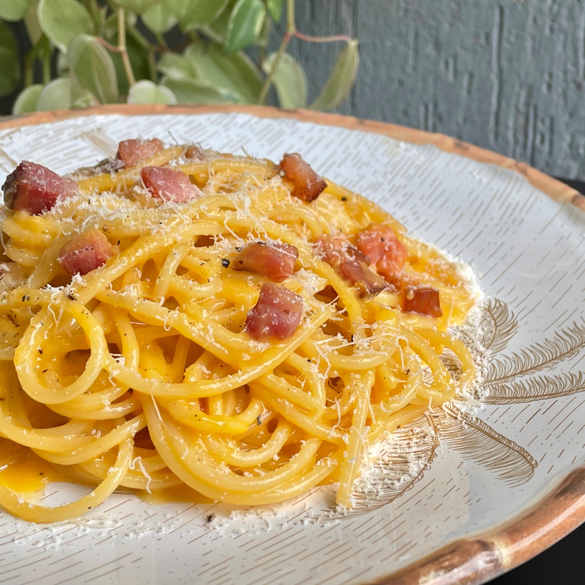

Spaghetti Carbonara
One of the classic italian dish, with origin in Rome, but revived in the middle of the 20th century. Although many people think it is a difficult dish to do, it's actually very easy recipe.
There are many theories for the origin of the name carbonara, which is likely more recent than the dish itself. Since the name is derived from carbonaro (the Italian word for 'charcoal burner'), some believe the dish was first made as a hearty meal for Italian charcoal workers.
Ingredients
- 500 g of Spaghetti
- 140 g pancetta (or smoked bacon)
- 4 chicken eggs (3 complete, 1 only the yolk)
- 140 g of parmesan cheese
- Black pepper
Directions
-
Put a large saucepan of water to boil, and add one teaspoon of salt to the water when it comes to boil.
-
Finely chop the 100g pancetta, having first removed any rind. Finely grate the parmesan cheese.
-
Beat the eggs (3 eggs and the yolk) in a medium bowl with the grated cheese. Season it with grated black pepper
-
Fry the pancetta/bacon in a large frying pan. (You can add 30g of unsalted butter before the pancetta and a garlic glove to add more flavour.)
-
When the pancetta is crisp and golden, turn of the frying pan and add the Spaghetti to the boilling water and wait for 9 minutes or until al dente. (If you Spaghetti takes more than 9 minutes to cook, you can do this step before the 3 previous steps)
-
Turn on the the heat under the frying pan with the pancetta on low. Lift it from the water with a pasta fork or tongs and put it in the frying pan with the pancetta. Add extra pasta cooking water to keep it saucy (several tablespoons should do it). You don't want it wet, just moist..
-
Quickly pour the mixture of egg and cheese in in the Spaghetti. Using the tongs or a long fork, lift up the spaghetti so it mixes easily with the egg mixture, which thickens but doesn't scramble, and everything is coated.
-
Use a long-pronged fork to twist the pasta on to the serving plate or bowl. Serve immediately with a little sprinkling of the remaining cheese and a grating of black pepper. If the dish does get a little dry before serving, splash in some more hot pasta water and the glossy sauciness will be revived.